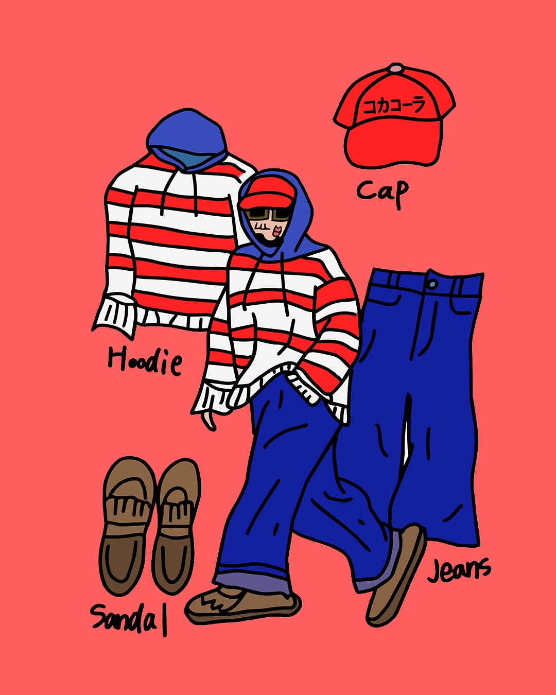
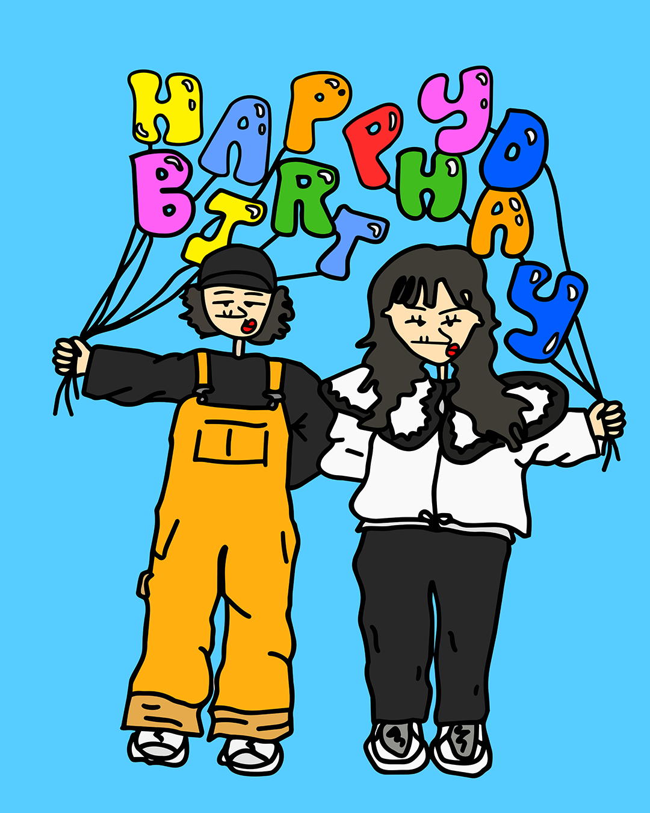
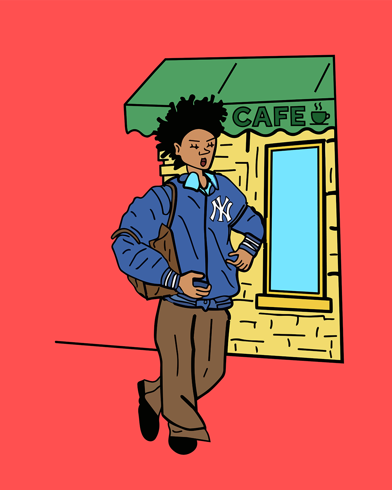

TRANSITIONとは？
CSSの状態が変化するとき、その変化をなめらかにする。
（1）ボタン
ボタンにマウスを乗せて、実際に動きを体験しよう。
（2）テキストリンクの下線
text-decorationではなく疑似要素で線を引くと、伸び方をコントロールできます。
3つのリンクにマウスを乗せてみよう。
（3）カードのホバー（画像のズーム＋オーバーレイ）
親要素の :hover をきっかけに、中の複数の要素をまとめて動かすパターンです。時間差（delay）をつけると上質に見えます。
3つのカードにマウスを乗せてみよう。
（4）グローバルナビ＆ドロップダウン
メニューの開閉は opacity ＋ visibility ＋ transform の3点セットが定番です。子項目に transition-delay をずらして与えると、順番に現れます。
「ITEM」にマウスを乗せてみよう。
/* ITEMにドロップダウン専用のクラス名をつける */
.has-dropdown {
position: relative;
}
/* ドロップダウン本体 */
.dropdown {
position: absolute;
top: 100%;
left: 0;
width: 150px;
background-color: #fff;
z-index: 10;
box-shadow: 2px 2px 10px rgba(0, 0, 0, 0.3);
opacity: 0;
visibility: hidden;
transform: translateY(-10px);
transition:
opacity 0.3s ease,
visibility 0.3s ease,
transform 0.3s ease;
}
/* ITEMをホバーした時、ドロップダウンを表示 */
/* :focus-within をつけると、キーボード操作やスマホのタップでも開く */
.has-dropdown:hover .dropdown,
.has-dropdown:focus-within .dropdown {
opacity: 1;
visibility: visible;
transform: translateY(0);
}
/* ドロップダウン内のリスト */
.dropdown li {
opacity: 0;
transform: translateY(-5px);
transition:
opacity 0.3s ease,
transform 0.3s ease;
}
/* ITEMをホバーした時、リストを表示 */
.has-dropdown:hover .dropdown li,
.has-dropdown:focus-within .dropdown li {
opacity: 1;
transform: translateY(0);
}
/* リストを時間差で表示 */
.dropdown li:nth-child(1) {
transition-delay: 0.05s;
}
.dropdown li:nth-child(2) {
transition-delay: 0.1s;
}
.dropdown li:nth-child(3) {
transition-delay: 0.15s;
}
.dropdown li:nth-child(4) {
transition-delay: 0.2s;
}
.dropdown li:nth-child(5) {
transition-delay: 0.25s;
}（5）フォームのフォーカス演出
入力欄は「いま入力している場所」を伝えることが最重要です。:focus をきっかけに枠線とラベルを動かします。
入力欄をクリックしてみよう。ラベルが上に移動するよ。
/* 入力フォーム */
/* input, label の順でHTMLに書くこと（form-itemで囲む） */
.form-item {
position: relative;
width: 300px;
}
.form-item input {
width: 100%;
padding: 16px;
border: 1px solid #ccc;
border-radius: 4px;
}
.form-item label {
position: absolute;
left: 15px;
top: 13px;
color: #999;
transition: 0.2s;
pointer-events: none;
}
/* フォーカス中 または 入力済み */
.form-item input:focus + label,
.form-item input:valid + label {
top: -10px;
left: 10px;
background-color: #fff;
padding: 0 5px;
color: #256AFF;
font-size: 12px;
}
.form-item input:focus {
border-color: #256AFF;
outline: none;
}（6）トグルスイッチ
チェックボックスを隠し、:checked をきっかけに丸を移動させます。JavaScript は不要です。
スイッチをクリックしてみよう。
/* -----html----- */
<label class="toggle">
<input type="checkbox">
<span class="toggle-slider"></span>
</label>
/* -----html----- */
.toggle {
position: relative;
display: inline-block;
width: 60px;
height: 32px;
}
.toggle input {
opacity: 0;
width: 0;
height: 0;
}
.toggle-slider {
position: absolute;
inset: 0;
background: #ccc;
border-radius: 999px;
cursor: pointer;
transition: 0.3s;
}
/* 丸い部分 */
.toggle-slider::before {
content: "";
position: absolute;
width: 24px;
height: 24px;
left: 4px;
top: 4px;
background-color: var(--main-color);
border-radius: 50%;
transition: 0.3s;
}
/* ONになったとき */
.toggle input:checked + .toggle-slider {
background-color: var(--sub-color);
}
/* ONになったとき、丸を右へ */
.toggle input:checked + .toggle-slider::before {
transform: translateX(28px);
}（7）アコーディオン
height: auto はアニメーションできませんが、Grid の grid-template-rows: 0fr → 1fr を使うと、中身の高さがいくつでもなめらかに開閉できます。
質問をクリックして開いてください。
今日は57日目です。
/* -----html----- */
<div class="accordion">
<input type="checkbox" id="acc01" class="acc-input">
<label for="acc01" class="acc-title">毎日投稿何日目ですか？</label>
<div class="acc-body">
<div class="acc-inner">
<p>今日は57日目です。</p>
</div>
</div>
</div>
/* -----html----- */
.accordion {
border: 1px solid #999;
border-radius: 16px;
}
.acc-input {
display: none;
}
.acc-title {
position: relative;
font-weight: bold;
display: block;
padding: 20px;
cursor: pointer;
}
.acc-title::after {
content: "+";
position: absolute;
right: 20px;
top: 50%;
transform: translateY(-50%);
font-size: 20px;
transition: transform 0.3s ease;
}
.acc-input:checked + .acc-title::after {
transform: translateY(-50%) rotate(45deg);
}
.acc-title:hover {
color: var(--main-color);
}
.acc-body {
display: grid;
grid-template-rows: 0fr;
transition: grid-template-rows 0.3s ease;
}
.acc-inner {
overflow: hidden;
}
.acc-input:checked ~ .acc-body {
grid-template-rows: 1fr;
}
.acc-inner p {
margin: 0;
padding: 20px;
}animationとは？
時間の流れに沿って、要素を自動的に動かす。
（1）ローディング表現 4種
「処理中である」ことを伝えるパーツです。ずっと動き続ける＝ animation の代表格です。
（2）スケルトンスクリーン（読み込み中の骨組み）
表示待ちの間、コンテンツの形だけを見せる手法です。グラデーションの位置をアニメーションさせて、光が流れているように見せます。
.skeleton {
background: linear-gradient(90deg,
#e5e7eb 25%,
#f3f4f6 37%,
#e5e7eb 63%);
background-size: 400% 100%;
animation: skeleton-loading 1.4s ease infinite;
}
/* このスケルトンカードだけ中央揃え */
.skeleton-card {
display: flex;
flex-direction: column;
align-items: center;
justify-content: flex-start;
/* 上下に引き伸ばさない */
}
/* h4 の代わり */
.skeleton-title {
width: 45%;
height: 1.2em;
border-radius: 4px;
}
/* p の代わり */
.skeleton-text {
width: 30%;
height: 0.9em;
margin-top: 10px;
border-radius: 4px;
}
/* animation-area の代わり */
.skeleton-card .skeleton-animation-area {
width: 100%;
min-height: 240px;
border-radius: 4px;
display: flex;
justify-content: center;
align-items: center;
}
/* .pulse の代わり */
.skeleton-circle {
width: 20px;
height: 20px;
border-radius: 50%;
}
/* VIEW CSS ボタンの代わり */
.skeleton-button {
width: 90px;
height: 32px;
margin-top: 20px;
border-radius: 4px;
}
.skeleton-card .animation-area {
background-color: transparent;
}
.skeleton-card .skeleton-button {
align-self: flex-start;
/* このボタンだけ左揃え */
}
@keyframes skeleton-loading {
from {
background-position: 100% 0;
}
to {
background-position: 0 0;
}
}
@media (prefers-reduced-motion: reduce) {
.skeleton {
animation: none;
}
}
@media (max-width: 800px) {
.flex-box {
flex-direction: column;
}
.flex-box .button-list-card {
width: 300px;
flex-basis: auto;
}
}（3）登場演出（フェードイン＋時間差）
ページを開いたときにふわっと現れる演出です。animation-delay をずらすと、順番に出てくる「ずらし（stagger）」になります。



@keyframes fadeInUp {
from {
opacity: 0;
transform: translateY(80px) scale(0.85);
filter: blur(8px);
}
to {
opacity: 1;
transform: translateY(0) scale(1);
filter: blur(0);
}
}
.image-list {
display: flex;
gap: 16px;
}
.image-list img {
flex: 1;
min-width: 0;
height: auto;
}
/* ---------------------------------------------
スクロール量に合わせて表示（JSなし）
animation-timeline: view() で、アニメーションの進み具合を
「時間」ではなく「要素が画面のどこにいるか」に連動させる
→ 速くスクロールすれば速く、止めれば途中で止まる
→ 上に戻せば逆再生されるので、スクロールのたびに登場する
※ スクロール連動では animation-delay（秒）は効かないので、
時間差は animation-range の開始・終了位置をずらして作る
--------------------------------------------- */
@supports (animation-timeline: view()) {
.fadein-item {
animation: fadeInUp linear both;
animation-timeline: view();
}
/* 時間差（stagger）：後の画像ほど遅い位置で始まる
終わりを entry 100%（画像が画面に入りきった位置）までに収めると、
ページ最下部の要素でも最後まで表示される */
.image-list .fadein-item:nth-child(1) {
animation-range: entry 0% entry 60%;
}
.image-list .fadein-item:nth-child(2) {
animation-range: entry 20% entry 80%;
}
.image-list .fadein-item:nth-child(3) {
animation-range: entry 40% entry 100%;
}
}
@media (prefers-reduced-motion: reduce) {
.fadein-item {
opacity: 1;
animation: none !important;
}
}
@media (max-width: 600px) {
.image-list {
flex-direction: column;
align-items: center;
}
.image-list img {
width: auto;
max-width: 280px;
}
}（4）流れるお知らせ
同じ内容を2つ並べ、1つぶんの幅だけ移動させて先頭に戻すと、途切れないループになります。
帯にマウスを乗せると停止します（読ませたいときの配慮）。
.marquee {
overflow: hidden;
width: 100%;
background-color: #333;
padding: 16px 0;
}
/* 横に流れる全体 */
.marquee-track {
display: flex;
width: max-content;
animation: marquee 18s linear infinite;
}
/* お知らせ1件分 */
.marquee-content {
display: flex;
align-items: center;
gap: 16px;
padding-right: 60px;
white-space: nowrap;
}
/* NEWSラベル */
.news-label {
font-size: 12px;
font-weight: bold;
color: var(--sub-color);
background-color: #333;
padding: 4px 10px;
}
/* 日付 */
.news-date {
font-size: 14px;
color: var(--sub-color);
}
/* お知らせ本文 */
.news-text {
font-size: 14px;
color: var(--sub-color);
}
/* 横に流すアニメーション */
@keyframes marquee {
from {
transform: translateX(0);
}
to {
transform: translateX(-50%);
}
}
/* マウスを乗せると停止 */
.marquee:hover .marquee-track {
animation-play-state: paused;
}（5）テキスト演出
文字そのものを動かすと、見出しの印象が大きく変わります。
「路傍のフジイ」面白かった！
.typing-text {
display: inline-block;
width: 0;
overflow: hidden;
white-space: nowrap;
color: #000;
font-size: 24px;
font-weight: bold;
border-right: 2px solid #000;
animation:
typing 3s steps(15, end) forwards,
blink 0.7s step-end infinite;
}
/* 文字を表示する */
@keyframes typing {
from {
width: 0;
}
to {
width: 15em;
}
}
/* カーソルを点滅させる */
@keyframes blink {
50% {
border-color: transparent;
}
}
/* ボタン */
.replay-button {
display: inline-block;
margin-top: 20px;
padding: 10px 20px;
color: #fff;
background: var(--main-color);
border-radius: 5px;
cursor: pointer;
}
/* チェックすると文字を消す */
.replay-toggle:checked ~ .typing-window .typing-text {
animation: none;
width: 0;
}（6）画面に入ったらふわっと表示
animation-timeline: view() は、「その要素が画面に入ってから出ていくまで」を時間の代わりに使います。Webサイトで最もよく求められる演出が、CSSだけで実現できます。
ゆっくりスクロールしてください。カードが順に現れます。
下から現れる
スクロールして画面に入ってきたタイミングで、透明度と位置が変化します。
拡大しながら現れる
animation-range を指定すると、「どのくらい見えたら再生を始めるか」を調整できます。
.reveal-flex {
display: flex;
flex-direction: column;
gap: 24px;
}
.text-accent {
color: var(--main-color);
font-weight: bold;
}
.reveal-up,
.reveal-scale,
.reveal-slide {
display: block;
border: 2px solid #000;
padding: 8px;
animation-timing-function: linear;
animation-fill-mode: both;
animation-timeline: view();
animation-range: entry 10% cover 35%;
}
/* ① 下から現れる */
@keyframes reveal-up {
from {
opacity: 0;
transform: translateY(40px);
}
to {
opacity: 1;
transform: translateY(0);
}
}
.reveal-up {
animation-name: reveal-up;
}
/* ② 拡大しながら現れる */
@keyframes reveal-scale {
from {
opacity: 0;
transform: scale(0.8);
}
to {
opacity: 1;
transform: scale(1);
}
}
.reveal-scale {
animation-name: reveal-scale;
}
/* ③ 横から滑り込む */
@keyframes reveal-slide {
from {
opacity: 0;
transform: translateX(-60px);
}
to {
opacity: 1;
transform: translateX(0);
}
}
.reveal-slide {
animation-name: reveal-slide;
}（7）回転する光の枠線（@property）
グラデーションの角度は、そのままではアニメーションできません。@property で「これは角度である」とブラウザに教えると、CSS変数そのものをなめらかに変化させられるようになります。
Always Rotate
常に回転する光の枠線。料金プランなどで使えそう。
Hover to Rotate
ホバーすると回転する光の枠線
@property --angle {
syntax: "<angle>";
initial-value: 0deg;
inherits: false;
}
@keyframes rotate-angle {
to {
--angle: 360deg;
}
}
.glow-card {
flex: 1;
position: relative;
padding: 3px;
border-radius: 16px;
background: conic-gradient(from var(--angle),
#00FFFF,
#0066FF,
#FF00FF,
#FFFF00,
#00FFFF);
}
.glow-card__content {
position: relative;
z-index: 1;
padding: 40px;
border-radius: 13px;
background: #ffffff;
color: #222222;
min-height: 200px;
box-sizing: border-box;
}
.glow-card--auto {
animation: rotate-angle 8s linear infinite;
}
.glow-card--hover:hover {
animation: rotate-angle 8s linear infinite;
}
.glow-card::before {
content: "";
position: absolute;
inset: -3px;
z-index: -1;
border-radius: inherit;
background: conic-gradient(from var(--angle),
#00FFFF,
#0066FF,
#FF00FF,
#FFFF00,
#00FFFF);
filter: blur(8px);
opacity: 0.7;
}